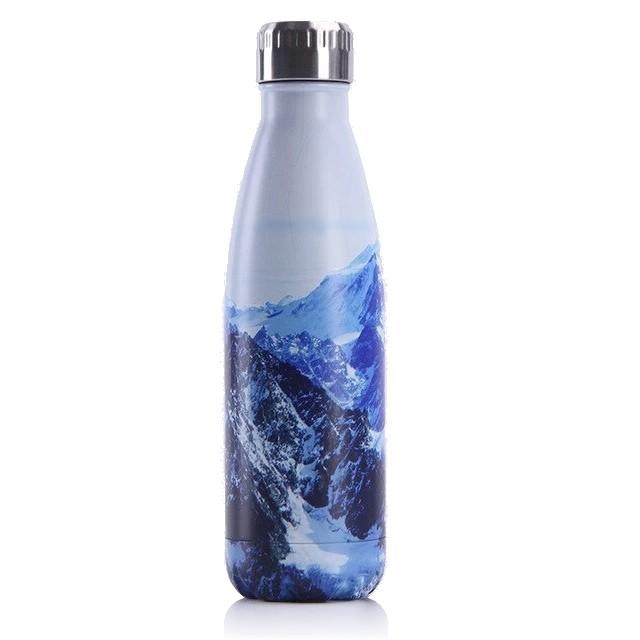
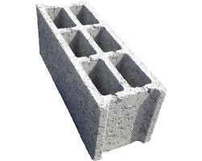
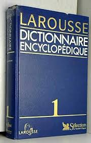
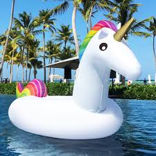
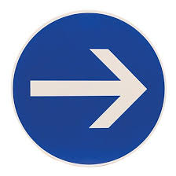
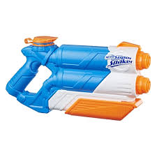
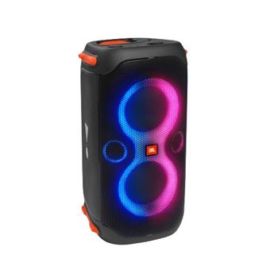
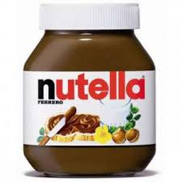
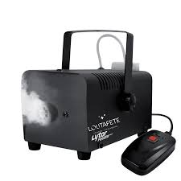
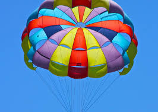

La clé de la survie, c'est de bien s'hydrater. Il serait dommage de mourir de soif avant d'arriver en haut n'est-ce pas ?
C'est toujours bien de porter un peu plus de poid inutile. Et puis peut-etre même qu'elle vous servira à vous défendre en cas d'attaque d'ours.
Il vous servira pour identifier chaque plante que vous croiserez et que vous ne comprenez pas.
Au cas où il y aurait un lac où vous pourriez vous baigner au sommet.
Pour faire dévier les autres randonneurs et avoir le sommet rien que pour vous.
Il vous servira à vous défendre en cas d'attaque de randonneurs rivaux ou bien tout simplement vous raffraichir en cas de fortes chaleurs.
Motivation garantie.
L'énergie nécessaire pour la montée... mais bonne chance pour le porter.
Pour créer une ambiance mystérieuse lors de votre arrivée.
Afin que la descente soit plus rapide. (n'oubiez pas d'apprendre à l'utiliser avant de sauter dans le vide...)
